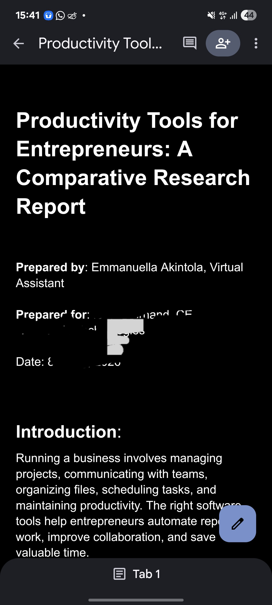

02 · RESEARCH
Productivity Tools Research
A sample research project comparing productivity tools and organizing findings into a clear professional report.

Project Overview
Conducted comparative research on productivity tools, reviewing their features and usefulness and organizing the findings into a structured professional report.
Tools & Skills
Internet Research
Comparative Analysis
Reporting
Documentation